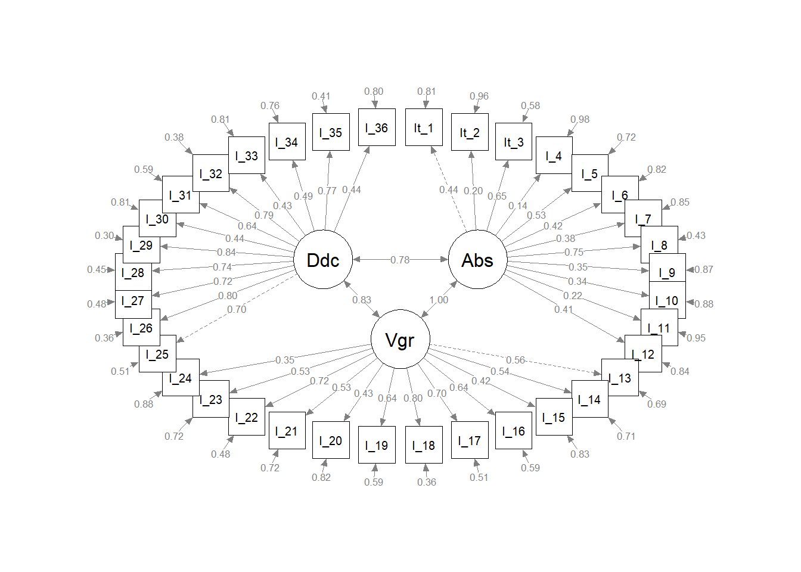
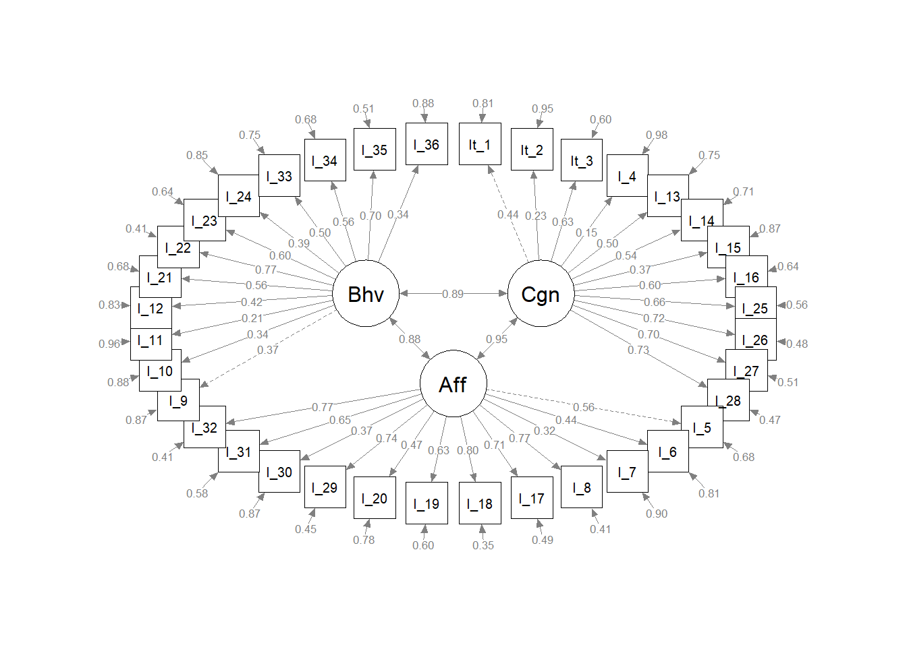

5 Analyses

bifactor analysis are most commonly applied in the exploration of common method variance (see, for example, Reise, 2012; Rodriguez et al., 2016). Giordano et al. (2020) provide an overview regarding past and potential applications of exploratory bifactor analysis and cite Reise (2012) as an influential impetus for the resurgence of bifactor models in general.
5.1 Pilot analyses
282 people responded. We may want to further screen these 282 responses for short response durations. According to communications with Qualtrics in early December, this is the number of seconds to complete the entire survey. Currently, the “number of people who clicked on the assessment link (330)” versus valid n (282) may take care of our very low duration respondents. The shortest response duration in the 330 datafile is 101 whereas the lowest in the 282 datafile is 43.
5.1.1 Classical test theory
In addition to the below interactive plot, a full inter-item correlation matrix is located in Appendix C.
## Some items ( I find it difficult to mentally disconnect from work. ) were negatively correlated with the total scale and
## probably should be reversed.
## To do this, run the function again with the 'check.keys=TRUE' option5.1.1.1 Internal consistency estimates
Condition 1 administered items within the substantive dimensions (with successive randomized blocks of Cognitive, Affective, and Behavioral items). Condition 2 administered items within the attitudinal dimensions (with successive randomized blocks of Absorption, Vigor, and Dedication items). Condition 3 stressed the substantive dimensions (with items fully randomized regardless of attitudinal association). Condition 4 stressed the attitudinal dimensions (with items fully randomized within attitudinal dimension regardless of substantive scale association, see Chapter 4.1 and Appendix B). Alphas for the candidate 12-item scales were:
| Dimension | Undifferentiated | Condition 1 | Condition 2 | Condition 3 | Condition 4 |
|---|---|---|---|---|---|
| Affective | 0.87 | 0.88 | 0.84 | 0.88 | 0.87 |
| Behavioral | 0.79 | 0.73 | 0.84 | 0.76 | 0.87 |
| Cognitive | 0.81 | 0.79 | 0.85 | 0.8 | 0.87 |
| Absorption | 0.74 | 0.72 | 0.77 | 0.72 | 0.87 |
| Vigor | 0.85 | 0.8 | 0.88 | 0.84 | 0.87 |
| Dedication | 0.9 | 0.9 | 0.91 | 0.91 | 0.87 |
“Cell” level alphas (4 items each scale, responses collapsed across administrative conditions) were:
| Cell | Alpha |
|---|---|
| Affective - Absorption | 0.66 |
| Affective - Vigor | 0.71 |
| Affective - Dedication | 0.75 |
| Behavioral - Absorption | 0.56 |
| Behavioral - Vigor | 0.7 |
| Behavioral - Dedication | 0.64 |
| Cognitive - Absorption | 0.59 |
| Cognitive - Vigor | 0.62 |
| Cognitive - Dedication | 0.83 |
Corrected item-total correlations are presented in Appendix D
5.1.2 Confirmatory factor analyses

We used lavaan version 0.6.8
| Model | \(\chi^2\) | df | RMSEA | SRMR | CFI | TLI | AIC |
|---|---|---|---|---|---|---|---|
| 3-factor substantive | 2159.21 | 591 | 0.11 | 0.1 | 0.64 | 0.62 | 25481.97 |
| 3-factor attitudinal | 2318.92 | 591 | 0.11 | 0.1 | 0.6 | 0.58 | 25641.68 |
5.1.2.1 Multigroup analyses
- using experimental condition as “multiple groups” (measurement invariance)
5.1.2.2 Bifactor analyses
- looking at dual structure
Note that the semPlots package has an option to generate bifactor plots
5.1.3 Summary
Recommendation for final instrument based on consideration of all of the above pieces of evidence